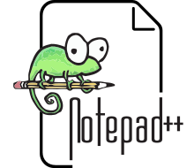

Notepad++ est un éditeur de texte libre générique, fonctionnant sous Windows, codé en C++, qui intègre la coloration syntaxique de code source pour les langages et fichiers C, C++, Java, C#, XML, HTML, PHP, JavaScript, makefile, art ASCII, doxygen, .bat, MS fichier ini, ASP, Visual Basic/VBScript, SQL, Objective-C, CSS, Pascal, Perl, Python, R, MATLAB, Lua, TCL, Assembleur, Ruby, Lisp, Scheme, Properties, Diff, Smalltalk, PostScript et VHDL ainsi que pour tout autre langage informatique, car ce logiciel propose la possibilité de créer ses propres colorations syntaxiques pour un langage quelconque.